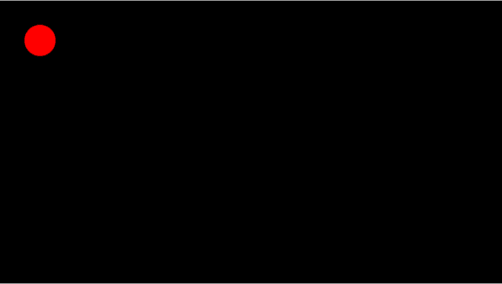

The Pointer Lock API (formerly called Mouse Lock API) provides input methods based on the movement of the mouse over time (i.e., deltas), not just the absolute position of the mouse cursor in the viewport. It gives you access to raw mouse movement, locks the target of mouse events to a single element, eliminates limits on how far mouse movement can go in a single direction, and removes the cursor from view. It is ideal for first person 3D games, for example.
More than that, the API is useful for any applications that require significant mouse input to control movements, rotate objects, and change entries, for example allowing users to control the viewing angle simply by moving the mouse around without any button clicking. The buttons are then freed up for other actions. Other examples include apps for viewing maps or satellite imagery.
Pointer lock lets you access mouse events even when the cursor goes past the boundary of the browser or screen. For example, your users can continue to rotate or manipulate a 3D model by moving the mouse without end. Without Pointer lock, the rotation or manipulation stops the moment the pointer reaches the edge of the browser or screen. Game players can now click buttons and swipe the mouse cursor back and forth without worrying about leaving the game play area and accidentally clicking another application that would take mouse focus away from the game.
Basic concepts
Pointer lock is related to mouse capture. Mouse capture provides continued delivery of events to a target element while a mouse is being dragged, but it stops when the mouse button is released. Pointer lock is different from mouse capture in the following ways:
- It is persistent: Pointer lock does not release the mouse until an explicit API call is made or the user uses a specific release gesture.
- It is not limited by browser or screen boundaries.
- It continues to send events regardless of mouse button state.
- It hides the cursor.
Method/properties overview
This section provides a brief description of each property and method related to the pointer lock specification.
requestPointerLock()
The Pointer lock API, similar to the Fullscreen API, extends DOM elements by adding a new method, requestPointerLock(). As it has recently unprefixed, you would currently declare it something like this, for example if you wanted to request pointer lock on a canvas element:
canvas.requestPointerLock = canvas.requestPointerLock || canvas.mozRequestPointerLock; canvas.requestPointerLock()
pointerLockElement and exitPointerLock()
The Pointer lock API also extends the Document interface, adding both a new property and a new method. The new property is used for accessing the currently locked element (if any), and is named pointerLockElement and the new method on Document is exitPointerLock() and, as the name implies, it is used to exit the pointer lock.
The pointerLockElement property is useful for determining if any element is currently pointer locked (e.g., for doing a Boolean check) and also for obtaining a reference to the locked element, if any.
Here is an example of using pointerLockElement:
if(document.pointerLockElement === canvas ||
document.mozPointerLockElement === canvas) {
console.log('The pointer lock status is now locked');
} else {
console.log('The pointer lock status is now unlocked');
}
The Document.exitPointerLock() method is used to exit pointer lock, and like requestPointerLock, works asynchronously using the pointerlockchange and pointerlockerror events, which you'll see more about below.
document.exitPointerLock = document.exitPointerLock ||
document.mozExitPointerLock;
// Attempt to unlock
document.exitPointerLock();
pointerlockchange event
When the Pointer lock state changes—for example, when calling requestPointerLock(), exitPointerLock(), the user pressing the ESC key, etc.—the pointerlockchange event is dispatched to the document. This is a simple event and contains no extra data.
if ("onpointerlockchange" in document) {
document.addEventListener('pointerlockchange', lockChangeAlert, false);
} else if ("onmozpointerlockchange" in document) {
document.addEventListener('mozpointerlockchange', lockChangeAlert, false);
}
function lockChangeAlert() {
if(document.pointerLockElement === canvas ||
document.mozPointerLockElement === canvas) {
console.log('The pointer lock status is now locked');
// Do something useful in response
} else {
console.log('The pointer lock status is now unlocked');
// Do something useful in response
}
}
pointerlockerror event
When there is an error caused by calling requestPointerLock() or exitPointerLock(), the pointerlockerror event is dispatched to the document. This is a simple event and contains no extra data.
document.addEventListener('pointerlockerror', lockError, false);
document.addEventListener('mozpointerlockerror', lockError, false);
function lockError(e) {
alert("Pointer lock failed");
}
moz in Firefox.Extensions to mouse events
The Pointer lock API extends the normal MouseEvent interface with movement attributes. Two new attributes to mouse events—movementX and movementY—provide the change in mouse positions. The values of the parameters are the same as the difference between the values of MouseEvent properties, screenX and screenY, which are stored in two subsequent mousemove events, eNow and ePrevious. In other words, the Pointer lock parameter movementX = eNow.screenX - ePrevious.screenX.
Locked state
When Pointer lock is enabled, the standard MouseEvent properties clientX, clientY, screenX, and screenY are held constant, as if the mouse is not moving. The movementX and movementY properties continue to provide the mouse's change in position. There is no limit to movementX and movementY values if the mouse is continuously moving in a single direction. The concept of the mouse cursor does not exist and the cursor cannot move off the window or be clamped by a screen edge.
Unlocked state
The parameters movementX and movementY are valid regardless of the mouse lock state, and are available even when unlocked for convenience.
When the mouse is unlocked, the system cursor can exit and re-enter the browser window. If that happens, movementX and movementY could be set to zero.
Simple example walkthrough
We've written a simple pointer lock demo to show you how to use it to set up a simple control system (see source code). The demo looks like this:

This demo uses JavaScript to draw a ball on top of an <canvas> element. When you click the canvas, pointer lock is then used to remove the mouse pointer and allow you to move the ball directly using the mouse. Let's see how this works.
We set initial x and y positions on the canvas:
var x = 50; var y = 50;
The pointer lock methods are currently prefixed, so next we'll fork them for the different browser implementations.
canvas.requestPointerLock = canvas.requestPointerLock ||
canvas.mozRequestPointerLock;
document.exitPointerLock = document.exitPointerLock ||
document.mozExitPointerLock;
Now we set up an event listener to run the requestPointerLock() method on the canvas when it is clicked, which initiates pointer lock.
canvas.onclick = function() {
canvas.requestPointerLock();
}
Now for the dedicated pointer lock event listener: pointerlockchange. When this occurs, we run a function called lockChangeAlert() to handle the change.
// pointer lock event listener
// Hook pointer lock state change events for different browsers
document.addEventListener('pointerlockchange', lockChangeAlert, false);
document.addEventListener('mozpointerlockchange', lockChangeAlert, false);
This function checks the pointLockElement property to see if it is our canvas. If so, it attached an event listener to handle the mouse movements with the updatePosition() function. If not, it removes the event listener again.
function lockChangeAlert() {
if (document.pointerLockElement === canvas ||
document.mozPointerLockElement === canvas) {
console.log('The pointer lock status is now locked');
document.addEventListener("mousemove", updatePosition, false);
} else {
console.log('The pointer lock status is now unlocked');
document.removeEventListener("mousemove", updatePosition, false);
}
}
The updatePosition() function updates the position of the ball on the canvas (x and y), and also includes if() statements to check whether the ball has gone off the edges of the canvas. If so, it makes the ball wrap around to the opposite edge. It also includes a check whether a requestAnimationFrame() call has previously been made, and if so, calls it again as required, and calls the canvasDraw() function that updates the canvas scene. A tracker is also set up to write out the X and Y values to the screen, for reference.
var tracker = document.getElementById('tracker');
var animation;
function updatePosition(e) {
x += e.movementX;
y += e.movementY;
if (x > canvas.width + RADIUS) {
x = -RADIUS;
}
if (y > canvas.height + RADIUS) {
y = -RADIUS;
}
if (x < -RADIUS) {
x = canvas.width + RADIUS;
}
if (y < -RADIUS) {
y = canvas.height + RADIUS;
}
tracker.textContent = "X position: " + x + ", Y position: " + y;
if (!animation) {
animation = requestAnimationFrame(function() {
animation = null;
canvasDraw();
});
}
}
The canvasDraw() function draws the ball in the current x and y positions:
function canvasDraw() {
ctx.fillStyle = "black";
ctx.fillRect(0, 0, canvas.width, canvas.height);
ctx.fillStyle = "#f00";
ctx.beginPath();
ctx.arc(x, y, RADIUS, 0, degToRad(360), true);
ctx.fill();
}
iframe limitations
Pointer lock can only lock one iframe at a time. If you lock one iframe, you cannot try to lock another iframe and transfer the target to it; pointer lock will error out. To avoid this limitation, first unlock the locked iframe, and then lock the other.
While iframes work by default, "sandboxed" iframes block Pointer lock. The ability to avoid this limitation, in the form of the attribute/value combination <iframe sandbox="allow-pointer-lock">, is expected to appear in Chrome soon.
Specifications
| Specification | Status | Comment |
|---|---|---|
| Pointer Lock | Candidate Recommendation | Initial specification. |
Browser compatibility
We're converting our compatibility data into a machine-readable JSON format. This compatibility table still uses the old format, because we haven't yet converted the data it contains. Find out how you can help!
| Feature | Chrome | Edge | Firefox (Gecko) | Internet Explorer | Opera | Safari (WebKit) |
|---|---|---|---|---|---|---|
| Basic support |
(Yes) |
(Yes) |
(Yes) -moz |
No support | (Yes) | 10.1 |
| Unprefixed support | (Yes) | (Yes) | 50 (50) | No support | (Yes) | 10.1 |
| Feature | Android | Edge | Firefox Mobile (Gecko) | Firefox OS | IE Phone | Opera Mobile | Safari Mobile |
|---|---|---|---|---|---|---|---|
| Basic support | No support | No support | No support | No support | No support | No support | No support |